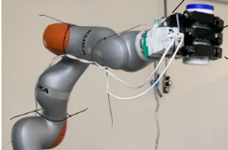
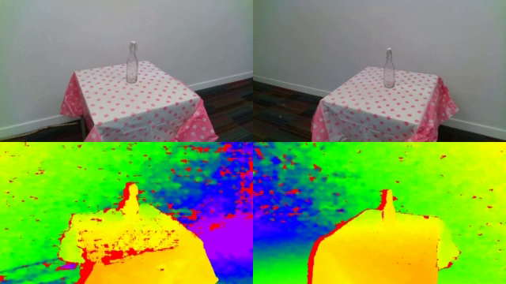
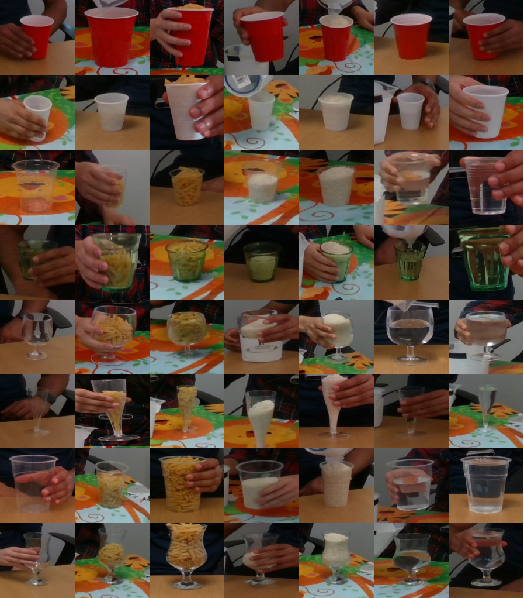
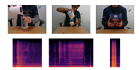
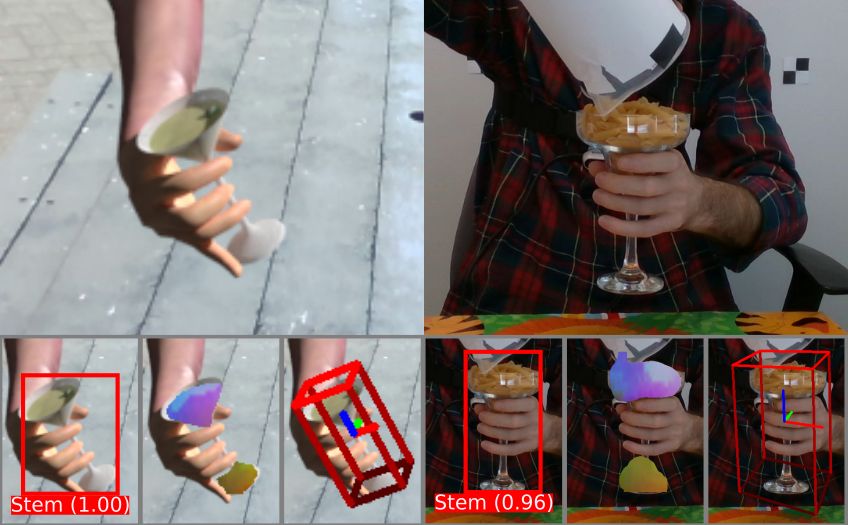

Data
|
CORSMAL Containers Manipulation 1,140 audio-visual-inertial recordings of people interacting with containers (e.g. pouring a liquid in a cup; shaking a food box). 15 containers; 3 filling levels; 3 types of filling. RGB, depth, and infrared images from 4 views; multi-channel audio from an 8-element circular microphone array. [details] [data] |
|
|  |
Audio and Tactile dataset of robot object manipulation with different material contents Auditory and tactile signals of a Kuka IIWA robot with an Allegro hand holding a plastic container containing different materials. The robot manipulates the container with vertical shaking and rotation motions. The data consists of force/pressure measurements on the Allegro hand using a Tekscan tactile skin sensor, auditory signals from a microphone, and the joints data of the IIWA robot and the Allegro hand joints. [details] |
|  |
CORSMAL Containers 1,656 images of 23 containers (cups, drinking glasses, bottles) seen by two cameras (RGB, depth, and narrow-baseline stereo infrared) under different lighting and background conditions. [details] [data] |
|  |
Crop - CORSMAL Containers Manipulation (C-CCM) 10,216 RGB images automatically sampled from the three fixed views of the public videos recordings of the CORSMAL Container Manipulation dataset, and capturing cups (4) and drinking glasses (4) as containers under different lighting and background conditions. Containers are completely visible or occluded by the person's hand. [details] |
|  |
Audio-based Containers Manipulation Setup 2 (ACM-S2) 21 audio recordings acquired in a different setup for the validation of audio-based models for the task of filling type and filling level classification. [details] |

|
Human-to-human handovers of objects with unknown content 219 configurations with synchronised video, poses (joints) and force sensors of 6 people manipulating and handing over 16 objects (4 drinking cups, 1 drinking glass, 1 mug, 1 food box, 1 pitcher and 8 common household objects) between each other in pairs. Dataset collected jointly with the SECONDHANDS EU H2020 project and in collaboration with Karlsruhe Institute of Technology (team of Prof. Tamim Asfour). |
|  |
CORSMAL Hand-Occluded Containers (CHOC) An image-based dataset for category-level 6D object pose and size estimation with 138,240 pseudo-realistic composite RGB-D images of hand-held containers on top of 30 real backgrounds (mixed-reality set) and 3,951 RGB-D images selected from the CORSMAL Container Manipulation dataset. [details] |
Models
|
Filling level classification (image based) Pre-trained models in PyTorch of the neural networks used in the paper Improving filling level classification with adversarial training. |
Real-to-simulation handovers Pre-trained models and 3D hand keypoints annotations to be used with the implementation of the real-to-simulation framework of the paper Towards safe human-to-robot handovers of unknown containers. |
Audio classification Neural network's architecture and pre-trained weights used in the paper Audio Classification of the Content of Food Containers and Drinking Glasses, and the pre-trained models of the methods under comparison. |
|
PRIME: A few primitives can boost robustness to common corruptions Models of the neural networks used in the paper PRIME: A few primitives can boost robustness to common corruptions and pre-trained on CIFAR-10, CIFAR-100, ImageNet-100 and ImageNet using PRIME. Included also a model pre-trained on ImageNet-100 by combining DeepAugment + PRIME. The networks are implemented in PyTorch. |
|
|
CHOC-NOCS Vision model based on a multi-branch convolutional neural network re-trained in QMUL for the task of category-level 6D pose estimation on real hand-occluded containers, and used in the pre-print A mixed-reality dataset for category-level 6D pose and size estimation of hand-occluded containers. The model is implemented in TensorFlow. |
Other datasets of interest
RGB-D object dataset
The RGB-D Object Dataset is a large dataset of 300 common household objects, recorded using a Kinect style 3D camera.JHU Visual Perception Datasets (JHU-VPD)
The JHU Visual Perception Datasets (JHU-VP) contain benchmarks for object recognition, detection and pose estimation using RGB-D data.BigBIRD: (Big) Berkeley instance recognition dataset
This is the dataset introduced with the following publication: A. Singh, J. Sha, K. Narayan, T. Achim, P. Abbeel, "A large-scale 3D database of object instances", Hong Kong, China, 31 May - 7 June 2014.iCubWorld transformations
In this dataset, each object is acquired while undergoing isolated visual transformations, in order to study invariance to real-world nuisances.Active Vision Dataset (AVD)
The dataset enables the simulation of motion for object instance recognition in real-world environments.HICO and HICO-DET datasets
Two benchmarks for classifying and detecting human-object interactions (HOI) in images: (i) HICO (Humans Interacting with Common Objects) and (ii) HICO-DET dataset.COCO dataset
A large-scale object detection, segmentation, and captioning dataset with several different features.Autonomous robot indoor dataset
The dataset embeds the challenges faced by a robot in a real-life application and provides a useful tool for validating object recognition algorithms.
Sponsors


Partners